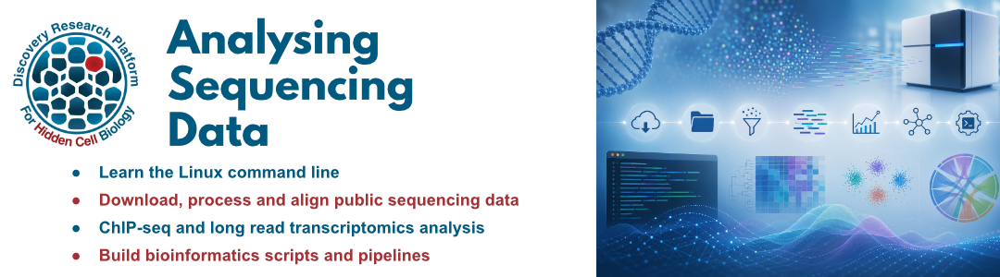
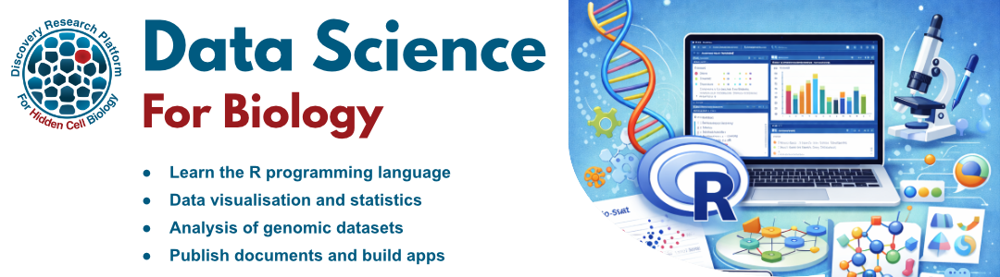

DRP-HCB Training Courses
Analysing sequencing data (2026)

Learn to analyse high throughput sequencing (HTS) data with the Linux command line. This course introduces popular tools, file formats and workflows for processing HTS datasets.
A laptop computer is required for this course.
The course is divided into five modules. Participants can register for the full course or individual modules.
- Bioinformatics on the Linux command line - 8th September
- High throughput sequencing data - 29th September
- HTS data analysis (ChIP-seq) - 27th October
- Long read transcriptomics - 24th November
- Building bioinformatics pipelines - 8th December
Each module consists of:
- A full day in person workshop
- Online training material for self study
- Monthly bioinformatics clinics for further advice
Cost
- All modules: £200
- Individual modules: £50
Registration
Please complete this registration form to sign up for the course or individual modules:
Analysing Sequencing Data Registration Form
This course is hosted by The Bioinformatics Core at the Discovery Research Platform for Hidden Cell Biology (DRP-HCB).
Contact shaun.webb@ed.ac.uk for more information.
Modules
Bioinformatics on the Linux command line
Tuesday 8th September, 10am - 4pm
JCMB 4325C, Kings Buildings
Gain hands-on experience using the Linux command line and working in a terminal environment. In this course, you will learn to run command line tools and interact with bioinformatics software and data.
- Navigate the Linux file system
- Learn Linux commands to manage and interact with files
- Run command line bioinformatics tools
- Install software with Conda
High throughput sequencing data
Tuesday 29th September, 10am - 4pm
JCMB 1512, Kings Buildings
Get to grips with sequencing data and file formats. Navigate online sequencing data repositories to identify publicly available datasets. Download, explore and assess sequencing data for further analysis.
- Search and download data from public repositories (ENA, GEO, SRA)
- Understand HTS file formats
- Perform quality control and assess sequencing data for analysis
- Explore reference sequence databases (Ensembl,NCBI)
HTS data analysis (ChIP-seq)
Tuesday 27th October, 9am - 3pm
JCMB 1206C, Kings Buildings
Perform a complete analysis of a sequencing dataset, from raw data to publication ready images. This workshop uses a short-read ChIP-seq dataset as an example, but many of the steps and tools are applicable to other technologies.
- Download public data
- Run quality control tools
- Map reads to a reference genome
- Visualise aligned data on a genome browser
- Downstream ChIP-seq analysis e.g. peak calling, motif analysis
Long read transcriptomics
Tuesday 24th November, 9am - 3pm
JCMB 1206C, Kings Buildings
This workshop covers analysis of long-read transcriptomic data in both model and non-model organisms. Learn to assemble transcripts, identify and annotate genes, and perform basic transcriptome analysis.
- Assemble transcriptomes with long reads (with and without a reference genome)
- Identify and annotate (novel) genes and transcript isoforms
- Transcript quantification and analysis
Building bioinformatics pipelines
Tuesday 8th December, 10am - 4pm
JCMB 4325C, Kings Buildings
Reproducibility is a corner stone of robust bioinformatics analysis. In this workshop, you will learn to build flexible, reproducible and automated bioinformatics pipelines using bash scripts and Snakemake.
Data Science for Biology (2026)

Learn data science skills with biological datasets. This course introduces the R programming language. R is an extremely powerful tool for data science, statistical analysis and data visualisation. It is favoured by biologists due to its extensive library of packages for bioinformatics and genomic analysis.
The Data Science for Biology course is divided into six modules. Participants can register for the full course or individual modules.
- Introduction to R and RStudio - 17th February
- Data manipulation and visualisation (Tidyverse) - 17th March
- Genomic datasets in R (Bioconductor) - 21st April
- Introduction to statistics (RStatix) - 12th May
- Differential expression analysis (DESeq2) - 9th June
- Data publication and presentation (Quarto and Shiny) - 23rd June
Each module consists of:
- A full day in person workshop
- Online training material for self study
- A practical exercise that can be tailored to your own data
- Access to monthly bioinformatics drop in sessions
Cost
- All modules: £200
- Individual modules: £50
Registration
Please complete this registration form to sign up for the course or individual modules:
Data Science for Biology Registration Form
This course is hosted by The Bioinformatics Core at the Discovery Research Platform for Hidden Cell Biology (DRP-HCB).
Contact shaun.webb@ed.ac.uk for more information.
Modules
Introduction to R and RStudio
17th February, 10am - 4pm
Rowan teaching room, The Nucleus, Kings Buildings
Learn the basics of the R programming language and the RStudio programming environment.
- Install R, RStudio and packages
- Use the RStudio interface
- Basic R syntax
- Data types and structures
- Importing and exporting data
- Plots and statistics with base R
Data manipulation and visualisation (Tidyverse)
17th March, 10am - 4pm
JCMB 3211, Kings Buildings
The Tidyverse is a collection of R packages designed for data science and the preferred utilities for many R users. This module introduces the core Tidyverse packages for data manipulation and visualisation.
- Introduction to the Tidyverse packages (tidyr, readr, dplyr, ggplot2)
- Work with large datasets
- Import, format, filter and summarise tables of data
- Create publication ready visualisations
Genomic datasets in R (Bioconductor packages)
21st April, 10am - 4pm
Rowan teaching room, The Nucleus, Kings Buildings
Bioconductor is a collection of R packages specifically designed for analysing genomic datasets. This module introduces some of the core Bioconductor packages and data formats for working with biological data.
- Bioconductor overview
- Importing and exporting genomic data
- Operations on genomic datasets
- Plotting genomic data
Introduction to Statistics (RStatix)
12th May, 10am - 4pm
JCMB 4325, Kings Buildings
An introduction to statistical analysis in R using the RStatix package. This module covers common statistical tests and how to apply them to biological datasets.
- Data exploration and visualisation
- Common statistical tests (t-test, ANOVA, chi-squared test)
- Assumptions and diagnostics
- Post-hoc testing and multiple testing correction
Differential expression analysis (DESeq2)
9th June, 10am - 4pm
JCMB 3212, Kings Buildings
Perform a full differential expression analysis of RNA-seq data using the DESeq2 Bioconductor package.
- Data import and quality control
- Normalisation and transformation
- Differential expression testing
- Visualisation and interpretation of results
- Downstream analysis (pathway analysis, gene ontology)
Data publication and presentation (Quarto and Shiny)
23rd June, 10am - 4pm
JCMB 3212, Kings Buildings
Learn how to build reproducible analyses and present your results as web pages and interactive applications.
Bioinformatics Clinics
Monthly drop-in sessions to get help with bioinformatics analysis and training exercises.
Upcoming dates:
- Friday 18th September 2026, 15:00 - 16:00, Swann 7.14, Kings Buildings
Bioinformatics Live
Regular live demonstration sessions covering a variety of bioinformatics tools.
- Friday 18th September 2026, 14:00 - 15:00, Swann 7.14, Kings Buildings
See the Bioinformatics Live page for more details and upcoming sessions.